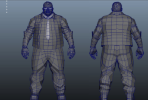
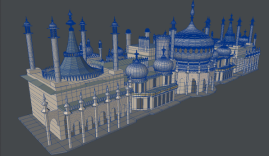

The scope of 3D modelling using deep neural networks in the future is
enormous. It has many real world application in a vast variety of fields.
For example, it can be used in the clothing industry to create a model of
the body to check whether certain clothes will fit and adjust the fitting
if need be. Additionally, modelling bodies in this way can be beneficial
for the gaming industry, as it allows for more accurate game characters to
be made from scans of real bodies. It can also be useful to the police in
solving crimes, as it can take security camera footage of a suspect and use
it to create an approximate model of them, making it easier to identify
them.

Although this research and these examples focus in particular on modelling
a human body, the method can be applied to any object, allowing 3D models
of a wide variety of bodies, not just humans, and this would lead to even
more potential real world applications in industries that could use a 3D
model of any object. For example, 3D body modelling is currently being used
in architecture to model the building so that it can be viewed from multiple
angles and you can even see the interior. Additionally, it can be used to
create models that simulate earthquakes and landforms, such as ocean
trenches, that let them see the affects of stresses, as well as in medicine
to create a model of a patient or certain parts of their bodies to better
inspect them.

As well as these uses, the more efficient body modelling algorithm my
research uses will enable such software to be used in a mobile application,
so that you could generate a body model from your phone just from taking a
picture of someone. This portability of the program will allow it to be used
in many more ways in the future.
The following video shows an application of 3D body modelling, where a bird's 3D mesh is constructed from a 2D picture of the same bird.